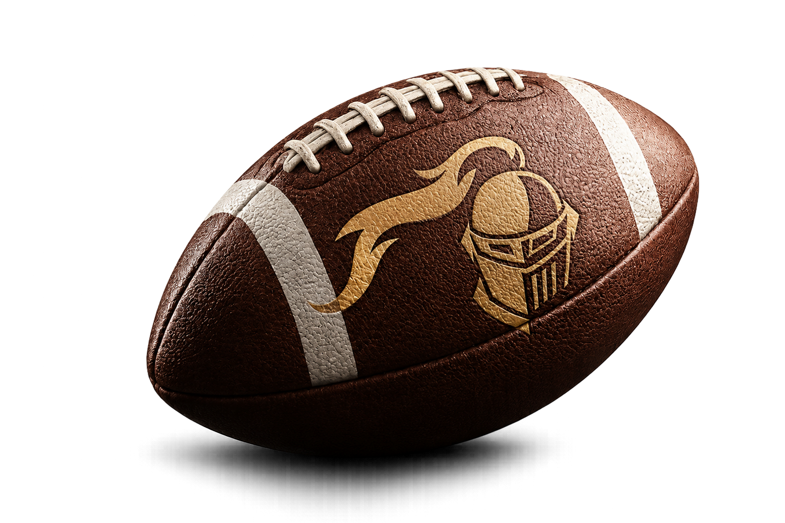
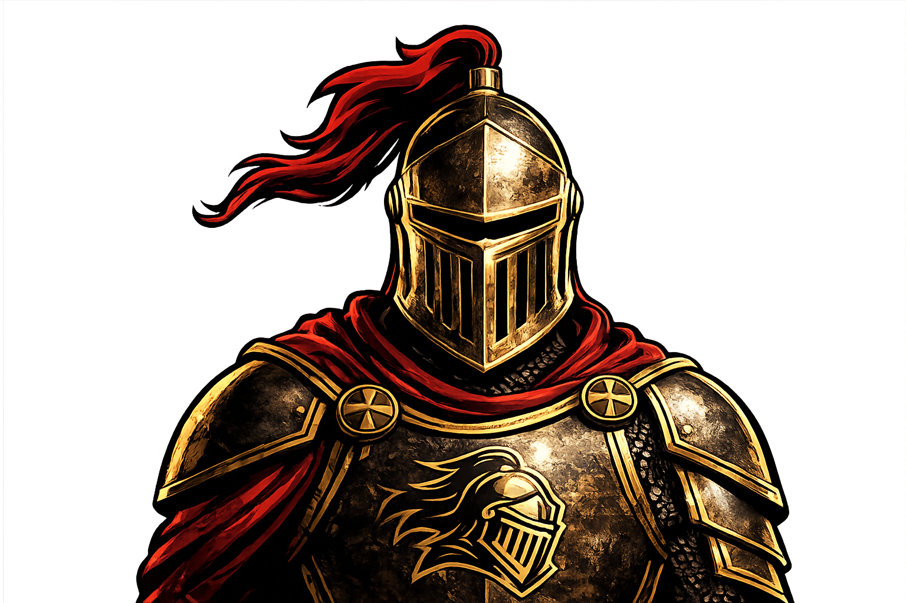

Offense
Routes, Timing, Playcalling und schnelle Entscheidungen.
 Sassenberg
SassenbergVfL Sassenberg · Erste Flag Football Mannschaft im Kreis WAF
Schnell, taktisch, kontaktarm: Flag Football in Sassenberg für alle, die Teamgeist, Tempo und Touchdowns lieben.


Unser Team
Die Sassenberg Knights stehen für Zusammenhalt, Disziplin und moderne Football-Kultur. Bei uns trainierst du Skills, Spielverständnis und Athletik – egal ob Rookie oder erfahrene Spielerin bzw. erfahrener Spieler.
Routes, Timing, Playcalling und schnelle Entscheidungen.
Flag Pulling, Coverage, Reads und maximale Intensität.
Team
Die Knights stellen sich vor. Lerne uns besser kennen.

Wide Receiver

Safety / Coach

Safety / Coach

Center / Coach

Wide Receiver

Cornerback

Cornerback

Wide Receiver

Safety

Wide Receiver

Wide Receiver

Wide Receiver

Wide Receiver

Wide Receiver / Coach

Wide Receiver

Cornerback / Rusher

Quarterback
Cornerback

Cornerback

Wide Receiver

Wide Receiver

Rusher
Fotograf
Rookie
Aufstellung
Hover über einen Spieler und lerne seine Aufgabe kennen.
Training

Knights in Action


Werde ein Knight
Du möchtest Flag Football ausprobieren oder einfach mal beim Training vorbeischauen? Dann melde dich unkompliziert bei uns.